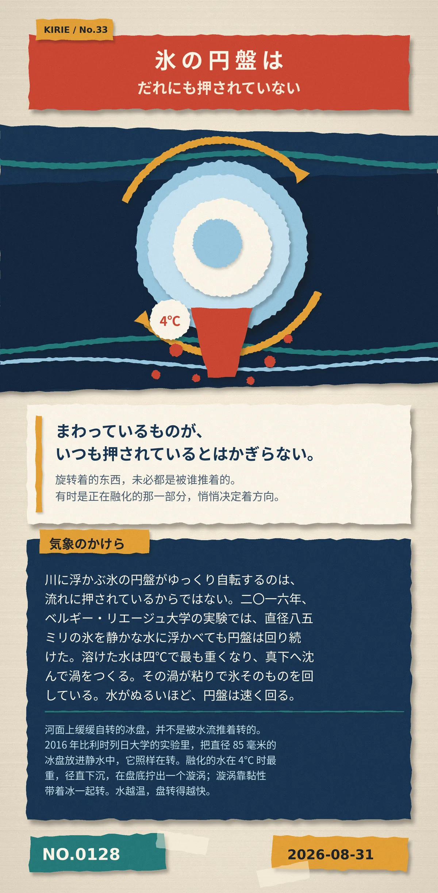

まわっているものが、いつも押されているとはかぎらない。（旋转着的东西，未必都是被谁推着的。有时是正在融化的那一部分，悄悄决定着方向。）
川に浮かぶ氷の円盤がゆっくり自転するのは、流れに押されているからではない。二〇一六年、ベルギー・リエージュ大学の実験では、直径八五ミリの氷を静かな水に浮かべても円盤は回り続けた。溶けた水は四℃で最も重くなり、真下へ沈んで渦をつくる。その渦が粘りで氷そのものを回している。水がぬるいほど、円盤は速く回る。